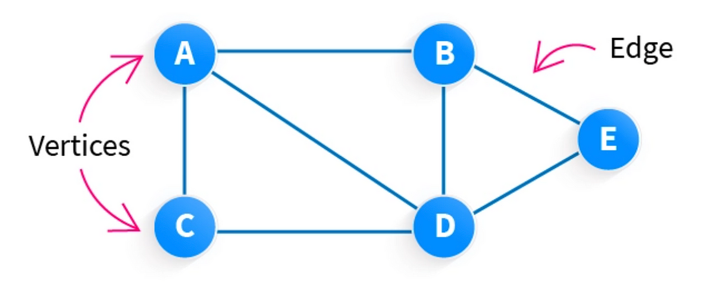
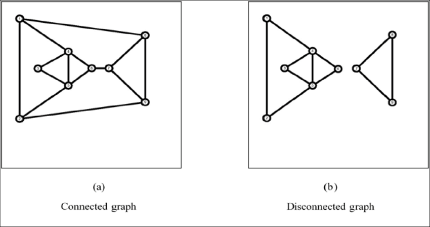
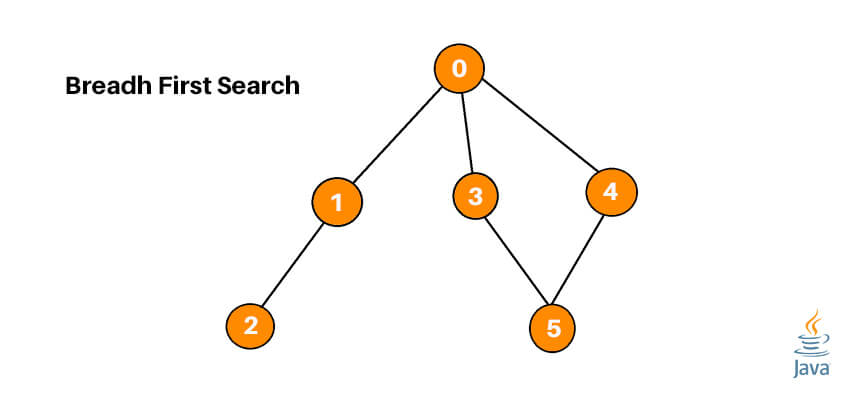

Graph theory is a branch of mathematics that studies the relationships between objects. Graphs are mathematical structures used to model pairwise relations between objects and are one of the most versatile tools in computer science and mathematics.

Basic Graph Terminology
A graph G consists of:
Vertices (V): Also called nodes, these are the fundamental units of a graph.
Edges (E): Connections between pairs of vertices, representing relationships.
Mathematically, a graph G is represented as G = (V, E), where V is a set of vertices and E is a set of edges.
Types of Graphs
Type
Description
Example
Undirected Graph
Edges have no direction, representing symmetric relationships
Friendship networks, road connections
Directed Graph (Digraph)
Edges have directions, representing asymmetric relationships
Web page links, email communication
Weighted Graph
Edges have associated weights or costs
Road networks with distances, network bandwidth
Complete Graph
Every vertex is connected to every other vertex
Full mesh network topology
Bipartite Graph
Vertices can be divided into two disjoint sets where edges only connect vertices in different sets
Students-to-courses assignments, job applicants to positions
Tree
Connected graph with no cycles
File systems, organization hierarchies
Graph Representations
There are several ways to represent graphs in computer programs:
1. Adjacency Matrix
A 2D array where cell [i][j] represents the connection between vertices i and j.
// Adjacency matrix for a graph with 4 vertices
// 1 indicates an edge exists, 0 indicates no edge
matrix = [
[0, 1, 0, 1], // Vertex 0 connects to vertices 1 and 3
[1, 0, 1, 0], // Vertex 1 connects to vertices 0 and 2
[0, 1, 0, 1], // Vertex 2 connects to vertices 1 and 3
[1, 0, 1, 0] // Vertex 3 connects to vertices 0 and 2
]
2. Adjacency List
A collection of lists where each list contains the neighbors of a specific vertex.
// Adjacency list for the same graph
adjacencyList = [
[1, 3], // Vertex 0 connects to vertices 1 and 3
[0, 2], // Vertex 1 connects to vertices 0 and 2
[1, 3], // Vertex 2 connects to vertices 1 and 3
[0, 2] // Vertex 3 connects to vertices 0 and 2
]
Space Complexity Comparison:
Adjacency Matrix: O(V²) - inefficient for sparse graphs
Adjacency List: O(V + E) - more efficient for sparse graphs
Graph Properties and Paths
Understanding the properties of graphs and the concept of paths is essential for applying graph theory to solve real-world problems.
Important Graph Properties
Connectivity
A graph is connected if there is a path between every pair of vertices. Connectivity has important implications for network reliability and communication.

In a disconnected graph, vertices form separate components that are not reachable from each other.
Degree
The degree of a vertex is the number of edges connected to it.
In an undirected graph, each vertex has a single degree value.
In a directed graph, vertices have both in-degree (incoming edges) and out-degree (outgoing edges).
Handshaking Theorem: In any undirected graph, the sum of all vertex degrees equals twice the number of edges (2|E|).
Cycles and Acyclicity
A cycle is a path that starts and ends at the same vertex, with no repeated edges.
A graph with no cycles is called acyclic.
A directed acyclic graph (DAG) is particularly important in many applications including scheduling, data processing, and dependency resolution.
Paths and Walks
A path is a sequence of vertices where each adjacent pair is connected by an edge. Paths have several important variations:
Type
Description
Walk
A sequence of vertices and edges (can repeat both vertices and edges)
Trail
A walk with no repeated edges (can repeat vertices)
Path
A walk with no repeated vertices or edges
Cycle
A path that starts and ends at the same vertex
Path Length and Distance
The length of a path is typically the number of edges in the path. In a weighted graph, it's the sum of the edge weights.
The distance between two vertices is the length of the shortest path between them. If no path exists, the distance is considered infinite.
Special Paths
Eulerian Path and Circuit
An Eulerian path visits every edge in a graph exactly once. An Eulerian circuit is an Eulerian path that starts and ends at the same vertex.
A graph has an Eulerian circuit if and only if:
All vertices have even degree
The graph is connected (or all vertices with non-zero degree are connected)
Hamiltonian Path and Circuit
A Hamiltonian path visits every vertex in a graph exactly once. A Hamiltonian circuit is a Hamiltonian path that forms a cycle.
Unlike Eulerian paths, there's no simple characterization for when a graph has a Hamiltonian path. Finding a Hamiltonian path is computationally harder (NP-complete).
Graph Traversal and Algorithms
Graph traversal refers to the process of visiting each vertex in a graph. Various algorithms exist for traversing graphs and solving graph-related problems.
Basic Graph Traversal
1. Depth-First Search (DFS)
DFS explores as far as possible along each branch before backtracking. It uses a stack (often implemented using recursion) to keep track of vertices to be explored.
// DFS pseudocode
function DFS(graph, startVertex):
let visited = new Set()
function explore(vertex):
// Mark vertex as visited
visited.add(vertex)
// Print or process the current vertex
print(vertex)
// Visit all adjacent vertices
for each neighbor of graph[vertex]:
if neighbor not in visited:
explore(neighbor)
explore(startVertex)
Applications of DFS: Topological sorting, cycle detection, path finding, and maze generation.
2. Breadth-First Search (BFS)
BFS explores all neighbors at the present depth before moving on to vertices at the next depth level. It uses a queue to keep track of vertices to be explored.

// BFS pseudocode
function BFS(graph, startVertex):
let visited = new Set()
let queue = new Queue()
// Mark the start vertex as visited and enqueue it
visited.add(startVertex)
queue.enqueue(startVertex)
while queue is not empty:
// Dequeue a vertex from queue
let vertex = queue.dequeue()
// Print or process the current vertex
print(vertex)
// Visit all adjacent vertices
for each neighbor of graph[vertex]:
if neighbor not in visited:
visited.add(neighbor)
queue.enqueue(neighbor)
Applications of BFS: Shortest path (unweighted), connected components, and network broadcasting.
Shortest Path Algorithms
1. Dijkstra's Algorithm
Dijkstra's algorithm finds the shortest path from a single source vertex to all other vertices in a weighted graph with non-negative weights.
// Dijkstra's algorithm pseudocode
function Dijkstra(graph, startVertex):
let distances = {} // Stores shortest distance from start to each vertex
let previous = {} // Stores previous vertex in optimal path
let unvisited = new PriorityQueue()
// Initialize distances
for each vertex v in graph:
if v equals startVertex:
distances[v] = 0
else:
distances[v] = INFINITY
previous[v] = null
unvisited.add(v, distances[v])
while unvisited is not empty:
// Get vertex with minimum distance
let current = unvisited.extractMin()
// If we've reached a vertex with infinite distance,
// we've processed all reachable vertices
if distances[current] equals INFINITY:
break
// Check all neighbors of current
for each neighbor of graph[current]:
let weight = graph.getWeight(current, neighbor)
let distanceCandidate = distances[current] + weight
// If we found a shorter path to neighbor
if distanceCandidate < distances[neighbor]:
// Update distance and previous vertex
distances[neighbor] = distanceCandidate
previous[neighbor] = current
unvisited.decreaseKey(neighbor, distanceCandidate)
return {distances, previous}
2. Bellman-Ford Algorithm
Similar to Dijkstra's, but can handle graphs with negative edge weights. It also detects negative cycles.
Minimum Spanning Tree Algorithms
A minimum spanning tree (MST) is a subset of edges that connects all vertices in a weighted graph while minimizing the total edge weight.
1. Kruskal's Algorithm
Kruskal's algorithm builds the MST by adding edges in ascending order of weight, avoiding cycles.
2. Prim's Algorithm
Prim's algorithm grows the MST one vertex at a time, always adding the lowest-weight edge that connects a vertex in the tree to a vertex outside the tree.
Real-World Applications
Social Networks: Analyzing connections between people
Transportation: Finding optimal routes and network design
Computer Networks: Routing algorithms and network topology
Recommendation Systems: Using graph-based approaches to find similar items
Scheduling: Using directed acyclic graphs to manage dependencies